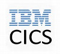

Nature does not hurry, yet everything is accomplished. - Lao Tzu
Founder of SyncMesh with the purpose to bring geo and maps technologies to enterprises and day to day experiences. Its a team work, focus , commitment and openness that drives the SyncMesh to be what it could be. Excited to make some critical decisions, meet new people and influence along the way.
We are in new era of geospatial Intelligence and Google embracing the fact by Open sourcing Earth Enterprise software - may it be a moment in the history. Now enterprises can make use of their full potential to bring new ideas, platforms and experience around Google Earth Enterprise that would only help the critical intelligence operations, disaster planning and recovery, Assets planning and tracking and serving the community. I am excited to be part of Open sourcing effort and my contributions to the product.
A moderate stunt at making some of the backend stable, augment and help some enterprise customers along the way. Grateful to see the impact of the Maps in Enterprise world and newly generated love to make it even better and trendy and less painful for companies to adopt to Geo tech. I understand what your money should bring you in terms of value and what you simply cannot miss it, that’s why I do exist.
 Multiple Hats, dawn coffees and coding , weekend Stroller(with baby) trips to office and what not - well worth it as I got my hands dirty from the geo data to the building Maps Experiences to designing feedback loop, to building the accurate models and context out of geo data - delivering on those was a lot of fun.
Multiple Hats, dawn coffees and coding , weekend Stroller(with baby) trips to office and what not - well worth it as I got my hands dirty from the geo data to the building Maps Experiences to designing feedback loop, to building the accurate models and context out of geo data - delivering on those was a lot of fun.
XBOX... find me top 20 movies in 2017. sounds a familiar thing to those who get their Netflix Microsoft XBOX ? So much fun project...I am proud to be part of phenomenon where speech and NUI was taking a big role and stage on major consumer software tech platforms and devices. Siri, Bing Voice Search, Cortana was all making news and unifying that experience in my beloved team in Speech Microsoft was so addictive.
Yes, I have gray hair and I know mainframes, from managing DB2 instances in $3 million lab in Redmond to crafting some beautiful piece of software to connect Windows to Mainframes, the Age speaks for all of it. Also saw some seriously committed people on the planet chasing their life's dreams - visiting seven seas, cave hunting and rock climbing and coming to office at 4am and fuelling their daughters dream to be a broadway artist and raising their family on farms and doing serious motorcycle riding (was partly involved). And adapting stray animals as pets and the list goes on...Amazing humans.
Code Monkey for Z-OS, I held that spot and stole all caps ( ref Monkey and Cap seller) COBOL, CICS, MVS, JCL, and what that version tracking system...ring ...ring Not ringing the bell. But the finance industry is serious about canary, staging and flights in production.